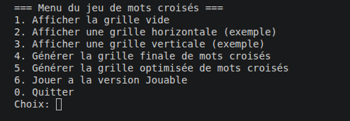
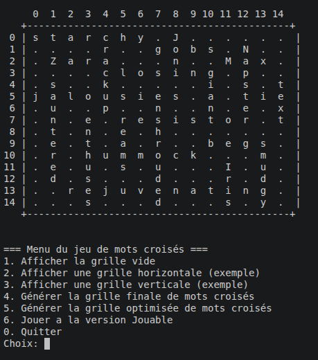

Jeu interactif en console, incluant la génération dynamique de grilles, la validation par dictionnaire et une logique de résolution en temps réel.
Ce projet algorithmique visait à concevoir un moteur complet pour un jeu de mots croisés, depuis l'intelligence logicielle générant les grilles de façon procédurale, jusqu'à l'interface textuelle permettant à l'utilisateur de jouer et valider ses mots.
Le projet aboutit à un exécutable léger, rapide et capable de faire jouer des grilles de mots croisés aléatoires à l'infini. Il m'a permis de pousser mes compétences en algorithmique classique et en gestion de pointeurs/matrices multidimensionnelles.

